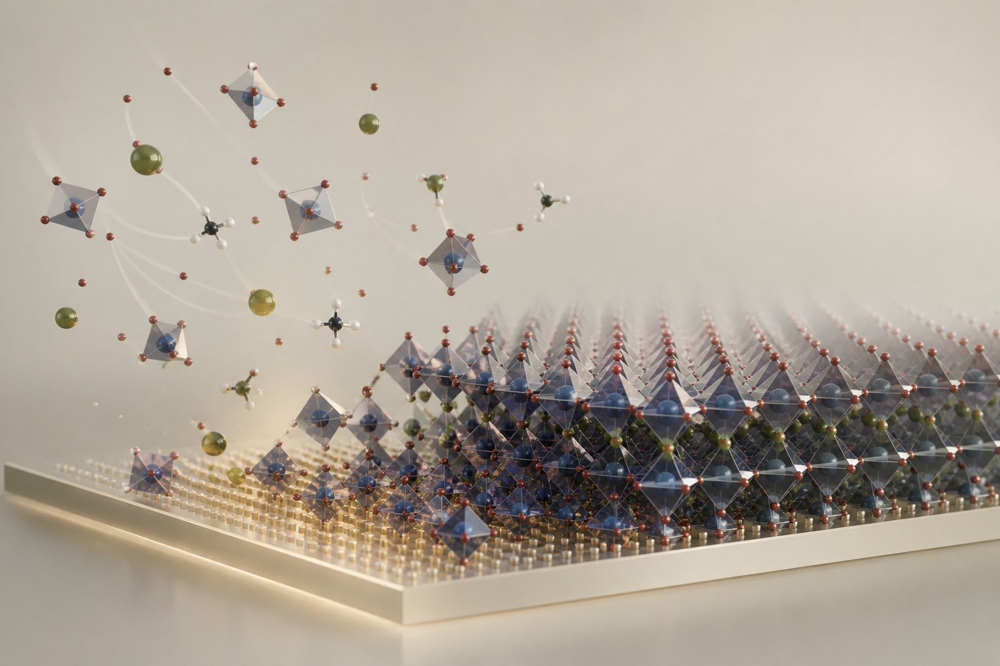
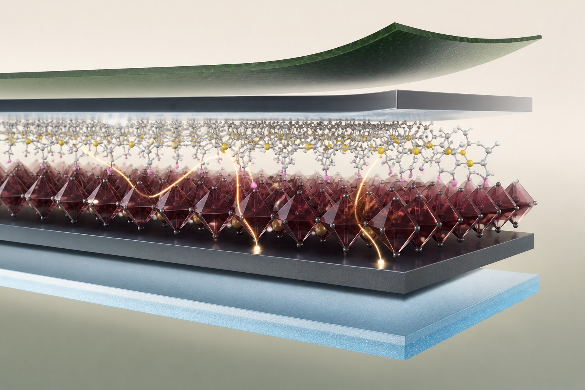
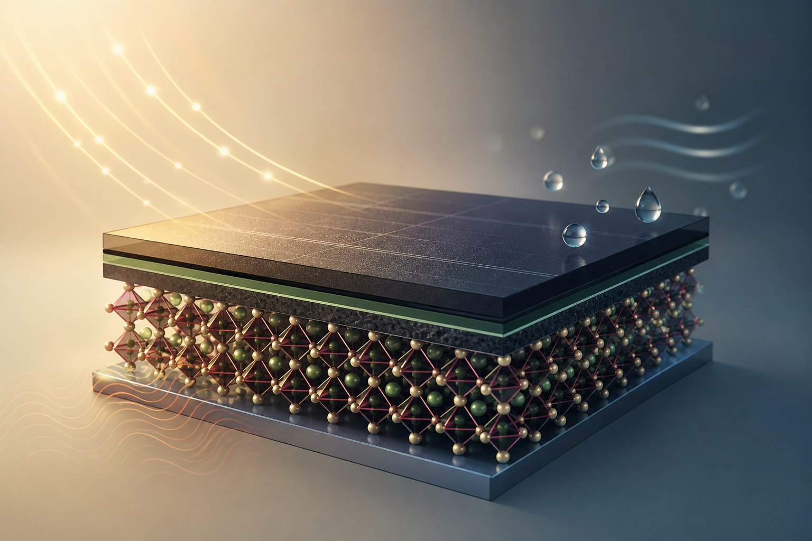

01
Kristallisation und Phasenkontrolle
Wir untersuchen, wie Vorstufenkoordination, Lösungsmittelentfernung und molekulare Additive die Filmbildung und Phasenstabilität von Perowskiten steuern.
Zugehörige PublikationDr.-Ing.
PostdocUniversität Stuttgart
Kristallisation, Grenzflächen
und robuste Solarzellen.
Ich untersuche, wie Chemie und Grenzflächen die Entstehung, Leistung und Stabilität von Halogenid-Perowskit-Solarzellen beeinflussen.
FORSCHUNGSSCHWERPUNKTE

Wir untersuchen, wie Vorstufenkoordination, Lösungsmittelentfernung und molekulare Additive die Filmbildung und Phasenstabilität von Perowskiten steuern.
Zugehörige Publikation
Mit organischen Molekülen, Polymeren und niedrigdimensionalen Materialien beeinflussen wir Defekte, Ionenmigration und Ladungstransport in bleihaltigen und zinnbasierten Bauelementen.
Zugehörige Publikation
Wir untersuchen die Auswirkungen von Temperaturwechseln, Lichtzyklen und Feuchtigkeit auf Perowskit-Bauelemente und wie Materialdesign ihre Beständigkeit verbessern kann.
Zugehörige PublikationINTERAKTIVE PHOTOVOLTAIK
Untersuchen Sie Widerstandsverluste, Bandlückengrenzen und den aus der EQE integrierten Strom.
AUSGEWÄHLTE PUBLIKATIONEN
Fachartikel, Übersichten und Perspektiven – sehen Sie sich eine Auswahl oder die vollständige Liste an.
Ausgewählte Publikationen
Neueste zuerstNature Energy
Nature Energy 11(4), 623-632 (2026).
Science
Science 390(6777), 1021-1028 (2025).
Nature Reviews Materials
Nature Reviews Materials 10(7), 536-549 (2025).
Bibliografie geprüft am . Doppelte Scholar-Einträge wurden zusammengeführt; Korrekturen sind mit den Originalartikeln verknüpft. Google Scholar ansehen ↗
Ich arbeite als Postdoc in der Gruppe Emerging Materials am Institut für Photovoltaik der Universität Stuttgart. Meine Forschung verbindet Materialchemie, Dünnschichtkristallisation und Bauelementphysik, um die Perowskit-Photovoltaik besser zu verstehen und weiterzuentwickeln.
Meine Publikationen befassen sich mit Koordinationschemie und Phasenbildung, funktionalen Grenzflächen sowie der Reaktion von Solarzellen auf Licht, Temperatur und Feuchtigkeit. Weitere Arbeiten behandeln bleifreie Zinn-Perowskite, flexible Bauelemente und gemeinsame Forschung an skalierbaren Photovoltaikmodulen.
GOOGLE SCHOLAR
04 / AKTUELLES
Aktuelle gemeinsame Forschung,
vorgestellt von der Universität.
Photoschaltbare Moleküle helfen Perowskit-Solarzellen, wechselnde Lichtbedingungen zu überstehen.
Gemeinsame Forschung zu Lösungsmittelsystemen für wirtschaftlich nutzbare Perowskit-Photovoltaik.
05 / KONTAKT
Für wissenschaftlichen Austausch und akademische Anfragen.
weiwei.zuo@ipv.uni-stuttgart.deINSTITUT FÜR PHOTOVOLTAIK
Universität Stuttgart
Pfaffenwaldring 47
70569 Stuttgart, Deutschland
Raum 0.215
+49 711 685 67182